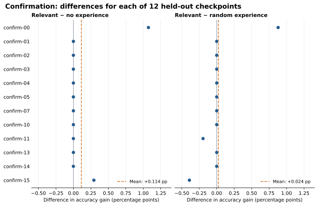

Research note · November 2026
Can Retrieved Editing Experience Transfer Across Neural Checkpoints?
In brief
Can a language-model editor repair a new network more effectively when it can read previous editing attempts? In this small controlled study, we did not find evidence that relevant retrieval reliably beat both controls.
Across 12 held-out checkpoints, the mean difference was +0.114 percentage points versus no experience and +0.024 points versus random experience; the joint test yielded p = 0.5. Only one checkpoint favored relevant retrieval over both controls. The result is inconclusive: the benchmark has only three synthetic task families and sparse nonzero outcomes.
The question
Recent weight-space programming work asks whether language models can reason about and directly edit neural weights. We ask a follow-up question: if an editor keeps records of earlier attempts, can selecting related records help it edit a new checkpoint? A relevant record might offer a useful idea; it might also copy an edit that works only for its source. Random examples help separate useful selection from the benefit of merely seeing examples.
Our target networks are tiny classifiers. We do not edit language-model weights, and this experiment cannot establish how the approach performs on language models or different architectures.
What we tested
The confirmation set contains 12 new checkpoints and two proposals per condition and checkpoint. Each final test has 512 points, but the checkpoint is the independent unit. Invalid or rejected proposals count as the unchanged baseline. The guard set is a separate input region of the same classification task, not a separate retained capability.
What happened?
Relevant retrieval did not meet the prespecified requirement of a five-point advantage over both controls, nor the requirement that most checkpoints favor it. The table shows held-out confirmation results; final accuracy is averaged over the two proposals for each checkpoint.
| Condition | Final accuracy | Gain over baseline | Accepted proposals |
|---|---|---|---|
| No experience | 70.972% | +0.106 pp | 8 / 24 |
| Random experience | 71.061% | +0.195 pp | 9 / 24 |
| Relevant experience | 71.086% | +0.220 pp | 11 / 24 |

Relevant minus no experience was +0.114 pp (nominal 95% bootstrap interval: 0.000 to 0.293 pp); relevant minus random was +0.024 pp (−0.114 to 0.203 pp). With 12 checkpoints and many ties, bootstrap intervals are fragile. A near-zero lower endpoint is not evidence that harm is impossible, and the sign-flip test requires a symmetry assumption.
Could we just carry the edit over?
We also compared three approaches: copy a validated source weight difference, re-execute its RMS-scaled program on the new checkpoint, or ask the editor for a new proposal after retrieval. Their mean confirmation gains were +1.628, +0.749, and +0.220 pp, respectively, after the same acceptance gate. The first two passed the gate on 4 of 12 checkpoints each.
This is a descriptive mechanism check. The source used for direct transfer need not be one of the two records shown to the editor, so the comparison is not source-matched and cannot establish why the numbers differ.
Scope and reproducibility
We used one editor service, one architecture, three synthetic task families and a small number of independently initialized checkpoints. Confirmation parameters were held out, but the confirmation implementation was frozen after screen proposals had begun and before screen final labels were opened. We also reopened references from the original plan during screen collection. Neither action changed the frozen retrieval inputs or method; both are documented as limitations.
The provider did not expose an immutable model revision. The package contains frozen configuration, source code, generated data, model responses, failed attempts and independent replay instructions. The study recorded 155 experimental API calls plus two connectivity checks; billing was not exposed. Target computation ran on CPU and did not use a GPU. AI assistants helped implement, review and write up the study; independent Codex subagents replayed the recorded results.
Related work
- Takehi et al. Sparks of Weight-Space Programming, 2026.
- Wang et al. Voyager: An Open-Ended Embodied Agent with Large Language Models, 2023.
- Ilharco et al. Editing Models with Task Arithmetic, ICLR 2023.
- Kawamoto et al. Cross-Model Transfer of Task Vectors via Few-Shot Orthogonal Alignment, 2025.
- Mitchell et al. Memory-Based Model Editing at Scale, ICML 2022.
The paper is licensed under CC BY 4.0. This page summarizes a preprint and is not a claim of conference submission or acceptance. The paper includes the complete protocol, uncertainty estimates and limitations.